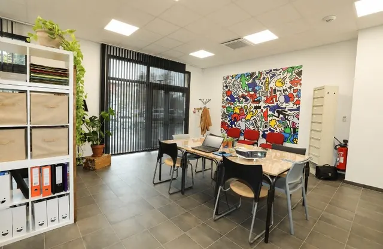
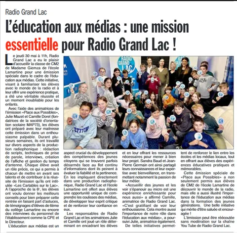
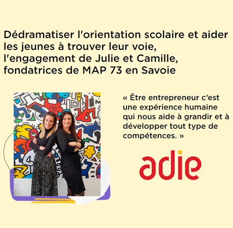

{kind=link}
Comprendre qui tu es
En connaissant ton fonctionnement, tes valeurs, tes besoins et ta personnalité, tu pourras te créer une vie à ton image.
MAP Orientation l’accompagne de la troisième à la terminale pour mieux se connaître, explorer des voies auxquelles il n’avait pas pensé auparavant, découvrir les métiers, choisir ses études et construire un projet qui lui ressemble. Cabinet de conseil en orientation scolaire à Chambéry, en présentiel ou à distance. À l’issue de l’accompagnement individualisé avec Camille et Julie, votre enfant aura toutes les cartes en main pour Maîtriser son Avenir et son Parcours.
MAP propose des formules en fonction de l’âge de votre enfant. « Votre enfant est en quelle classe ? »
Ce que couvre l’accompagnement
Un suivi personnalisé de la fin du collège jusqu’au bac.
Une responsable ressources humaines et une enseignante certifiée.
Au cabinet à Chambéry en Savoie, ou en visio partout en France.
Rentrée 2026
Les créneaux d’accompagnement de l’année scolaire se réservent dès maintenant, en présentiel ou à distance.
Prendre rendez-vousNouveau
Des séances en petit groupe pour explorer les métiers autrement, en complément du suivi individuel.
Voir les formulesToute l’année
Le cabinet est ouvert rue de Saint-Ombre à Chambéry : poussez la porte pour en parler de vive voix.
Nous trouverNotre objectif n’est pas de désigner un métier précis à votre enfant. Il est de lui donner toutes les cartes en main :

Agrandir la photo du cabinetTrois étapes indispensables pour réussir l’orientation de votre enfant : apprendre à se connaître, explorer les différentes voies et faire les bons choix.
En connaissant ton fonctionnement, tes valeurs, tes besoins et ta personnalité, tu pourras te créer une vie à ton image.
Pour faire les bons choix, il faut disposer des bonnes informations. Quoi de mieux que l’expertise d’une enseignante pour choisir la filière qui te plaît.
Perdu face au monde du travail : entretien, candidature, stage, état du marché ? La vision d’une responsable RH t’aidera à y voir plus clair.
Tous niveaux, à la carte
Objectif Accompagner les enfants sur des problématiques précises.
Contenu Une séance individuelle d’une heure.
Élèves de troisième
Objectif Aider votre enfant à choisir entre la voie générale et technologique et la voie professionnelle en seconde.
Contenu 5 séances individuelles.
Élèves de seconde
Objectif Préparer votre enfant à faire les bons choix de spécialités et l’initier aux orientations post-bac.
Contenu 5 séances individuelles.
Élèves de seconde, sur les trois années de lycée
Objectif Accompagner votre enfant sur ses trois années au lycée.
Contenu 15 séances sur 3 ans.
Élèves de première
Objectif Se préparer à aborder la dernière année de lycée avec des bases méthodologiques consolidées.
Contenu 4 séances individuelles ou sous forme d’atelier méthodologique.
Élèves de première et de terminale
Objectif Établir une stratégie personnalisée d’orientation jusqu’à l’étape Parcoursup.
Contenu 5 séances en première et 7 séances en terminale.
Élèves de terminale
Objectif Élaborer la stratégie complète du parcours Parcoursup.
Contenu 7 séances.
Deux parcours complémentaires, mis en commun pour aider les adolescents à franchir les obstacles de l’orientation et à choisir la filière qui leur plaît.
Ressources humaines
Enseignement et droit social
Parents et élèves accompagnés par MAP73 en Savoie.
Merci à Camille et Julie pour leur gentillesse et leur savoir-faire. Camille a accompagné ma fille pour ses vœux sur Parcoursup, la rédaction de ses lettres, les attentes des personnes en charge de la sélection, le choix de ses vœux. Aujourd’hui nous avons le plaisir de découvrir que ma fille est acceptée à tous ses vœux d’office. Encore merci de votre aide pour comprendre les méandres de Parcoursup.
Camille et Julie forment un tandem de choc aussi sympathique qu’efficace. Elles mettent les ados à l’aise, les aident à une auto-analyse pertinente et cohérente. Je ne peux que recommander cette structure sans hésitation.
En 2022, les séances d’orientation de Camille m’ont permis de trouver et d’intégrer une super école qui me plaît beaucoup, pourtant on partait de loin.
Les conseils de Julie et Camille m’ont beaucoup aidé pour mon orientation et pour compléter Parcoursup. Je recommande.
Julie est quelqu’un de très humain et également une excellente professionnelle. Elle est très à l’écoute et vous met à l’aise, je ne peux que recommander.
J’étais perdue, je ne savais pas comment m’y prendre. J’ai eu recours aux conseils de Camille et Julie : super organisation, ça m’a beaucoup aidée, je recommande.
Presse locale, radio et réseau d’entrepreneurs.

« L’éducation aux médias et techniques de production radiophonique : rédaction de scripts, prise de parole, interviews, création d’affiche et gestion du temps d’antenne. »
L’Hebdo des Savoie« Le programme Compass ouvre le champ des possibles à des jeunes âgés de 14 à 19 ans en quête de repères, qu’il s’agisse d’orientation ou d’épanouissement. »
Le Petit Reporter du 73« Balayer les turpitudes, ouvrir des perspectives, penser différemment, ouvrir un œil bienveillant sur le monde, tout un programme. »
Le Petit Reporter du 73« Le concept de l’émission Place aux Possibles de Radio Grand Lac : rapprocher les jeunes de l’univers du travail, co-animée avec Camille et Julie. »
Radio Grand Lac
« Dédramatiser l’orientation scolaire et aider les jeunes à trouver leur voie : l’engagement de Julie et Camille, fondatrices de MAP73 en Savoie. »
AdieNous recevons à notre cabinet, 56 rue de Saint-Ombre à Chambéry. Toutes nos formules existent également en visio, ce qui permet d’accompagner des familles hors de Savoie.
Dès la classe de 3e, au moment du premier vrai choix de voie, et jusqu’à la terminale avec le dossier Parcoursup.
Non, c’est même rarement le cas. Le travail commence par la connaissance de soi : fonctionnement, valeurs, besoins. Le projet se construit ensuite.
Un premier échange permet de cerner la situation et de choisir la formule adaptée.
Du lundi au vendredi, de 9h à 18h30
Le samedi, de 9h à 12h